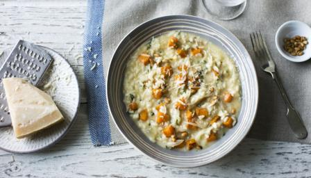

Courgette and lemon risotto

Description
This gorgeous courgette risotto is a favourite with kids and the cold leftovers can be used to make tasty arancini.
Ingredients
- 750ml/1¼ pints chicken or vegetable stock
- 25g/1oz unsalted butter
- 2 shallots, finely chopped
- 1 garlic clove, finely chopped
- 3 sprigs fresh thyme, leaves only
- 200g/7oz risotto rice
- 200ml/7fl oz white wine
- 200g/7oz courgettes, trimmed, cut into 1cm/½in cubes
- 4 heaped tbsp grated parmesan, plus extra to serve
- 1 unwaxed lemon, finely grated zest, plus 1 tbsp lemon juice
- salt and freshly ground black pepper
Steps
- Bring the stock to a simmer in a saucepan, then keep warm over a low-medium heat.
- Heat the butter in a large, heavy-based saucepan over a medium heat. Add the shallots, garlic and thyme and fry for 1-2 minutes, or until softened.
- Add the rice and stir well until it is coated in the melted butter. Add the wine and simmer until it has almost evaporated.
- Add a couple of ladlefuls of the hot stock to the pan, bringing each to a simmer and stirring regularly, until the rice has absorbed most of the liquid. Continue to add the stock a little at a time, stirring the rice regularly.
- When half of the stock has been added to the rice, stir in the courgettes, then continue to add the remaining stock until the rice is tender but has a slight bite ̶ about 15-18 minutes total cooking time.
- Stir in the parmesan, lemon zest and lemon juice (to taste). Season well with salt and freshly ground black pepper. Serve in bowls, sprinkled with more grated parmesan.
>